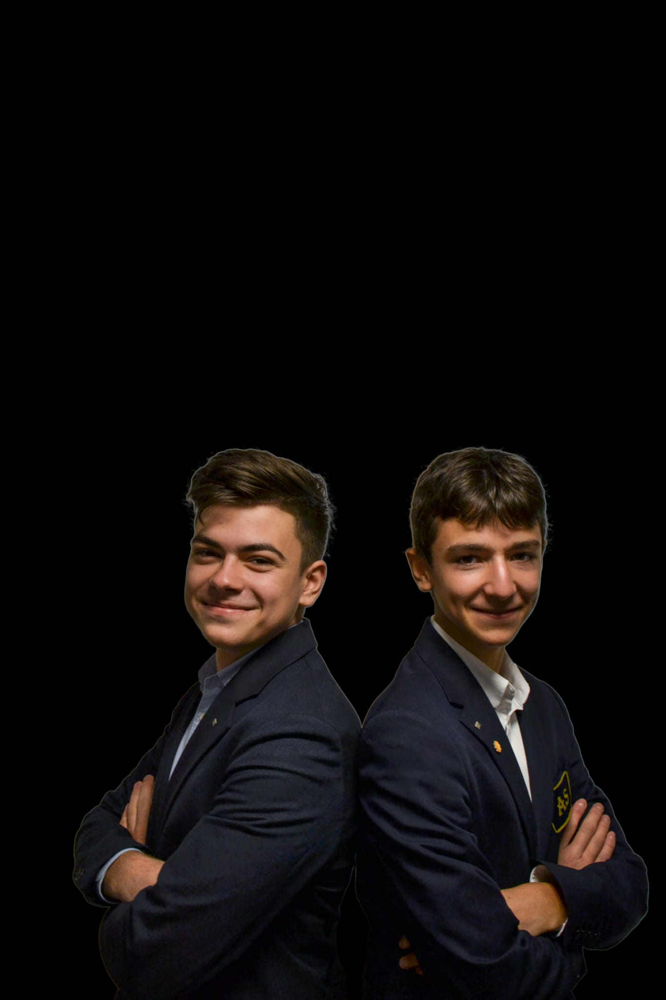
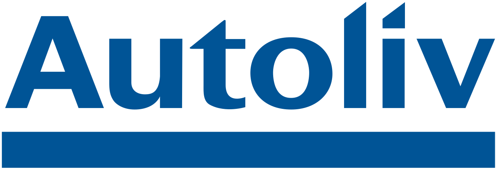
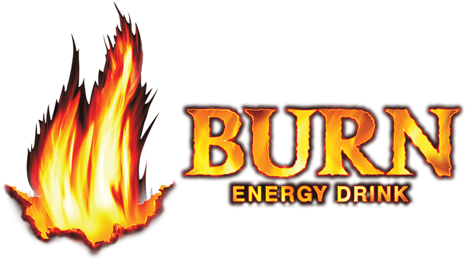

The Ford Celeritas car
Celeritas
Home
About Us
Sponsors
Contact
F1 in schools
This contest is focused on the design and manufacturing of a race car similar to that of one that competes in Formula 1 but of smaller proportions (Length: between 17-21 cm; Width: maximum 8,5 cm; Height: Maximum 6,5 cm). One crucial element of the project is coming up with a well thought out financial plan that includes various sponsorships. We are writing to you today with the intent of obtaining financial assistance from your company in order to acquire all the equipment needed to design, assemble and test our vehicle.
About the team members
Amir Al Mousawi
What is a team manager? A team manager is the backbone of any team, he coordinates his team
through frequent meeting and reports in which he assess the general state of the work that everyone is
doing. Whenever there is a clash between ideas, he is the one to manage it and find the best solution so
that everyone is pleased. The team manager also works closely with all the department managing operations
and overseeing the members’ tasks....
How Amir fulfilled his role:
To begin with, at the start of the project he helped define an essential part of the brand’s identity and
created a plan so that consistent progress could be made until the project’s deadline. He worked closely
with the marketing team making sure that the team’s identity matched with that of the sponsors and helped
expand the number of companies targeted by seeking partnerships with international corporations. During
the project he made sure that everyone’s ideas could be implemented so long as they met the high standards
of the team and respected the regulations. Lastly, he worked with the graphic design department in order
to create a portfolio that reflected the team’s identity and vision.
Mihnea & Dennis
What is a design engineer? You might ask yourself, what is the main task of the design
engineer? Briefly, he is responsible for the 3D designofthecaraswellasassessing its performance on the track
in a virtually simulated environment. The design engineer helps bring the team’s ideas to life and work on
perfecting them, creating the best end-product possible.
What is a marketing manager? A marketing manager ensures that the team creates business relations with a
plethora of companies in order to both finance the team and also define the team’s identity. Marketing
managers must also work on offering sponsors benefits in exchange for their financial aid, this includes
promoting the sponsor’s brand and meeting their expectations when it comes to the progress made....
How Mihnea and Dennis fullfiled their roles:
Reagrding the engineering part, they took the team’s general ideas and brought them to life in 3D, from
there the two of them collaborated with their teammates in order to improve the product using their
suggestions to make changes to the car so that everyone was confident in it. On top of that, they worked
with the marketing department in order to deliver a general concept that fitted the sponsors’ expectations
and also the manufacturing department so that the product can be made efficiently using the CNC machine.
Furthermore, they tested the 3D model of the car in order to assess its aerodynamic properties so that
they could determine what elements needed to be improved so that the car could achieve the team’s
goals.
On their way to fullfiling the marketing tasks, they started by gathering the contact information of
companies that they believed shared our goals and ambitions. After that they contacted the companies via
different means offering benefits in exchange for financial compensation. They then worked on
incorporating those brands into our team identity by forming a relation with them. Lastly, they worked on
maintaining those business relations through frequent updates on the team’s progress towards its end goal
of winning. Throughout all of this they managed the team’s social media accounts on various platforms
through which they advertised our sponsors and built our brand image

Alexandra Titel
What is a graphic designer? A graphic designer creates technical drawings in 2D as well as designing the team logo and uniform which contribute to the general aesthetic of the team. They are also responsible for designing the pit display along with the design and manufacturing department. Their main role is to build a team image that represent who we are as a brand....How Alexandra fulfilled her role: To begin with, she was responsible for sketches of the car so that the team could better see their ideas come to life on paper. She regularly consulted with the design department to make sure their ideas matched and that they were all designing a fast car. Alexandra also had a massive impact on the design of the portfolios, bringing new and original ideas in order to improve visual aspects of the project. On top of that she designed the team’s uniform and logo from scratch, capturing the essence of the team with her designs as well as creating a pit display that represents who we are as a team.
David Abrudan
What is a resource manager? The resource manager is responsible with budgeting the finances along with the marketing department. This department mainly focuses on providing the teamwiththenecessaryequipment so that everyone can work in the most effective way possible. On top of that, the resource manager is also responsible with making sure that everything is done in the most cost-efficient way.... How David fulfilled his role: To start off, he consulted with the marketing department in order to have a better idea of what budget the team had, from there he devised a financial plan so that all departments could benefit from the financial assistance received from the sponsors. He researched what equipment had to be acquired and what materials we needed. Then he distributed the budget to all the departments so that they could acquire what they needed. Throughout this project, he kept track of all the money that we received and all the money that we spent in order to create a financial report at the end of the competition so that the sponsors could see how they contributed to our results.
Victor Taras
What is a manufacturing engineer? The manufacturing engineer is the person that is responsible with making sure that the car can be built to the highest standards possible. On top of that they are responsible withtestingthecarusingsoftware that simulates fluid dynamics and with the data gathered they must consult with the design engineers in order to improve any aspects of the car that are lacking....How Victor fulfilled his role: To begin with he consulted with the design engineers, testing any prototypes they came up with and suggesting possible changes to the car that would make it faster and easier to build. In addition, he also researched materials and processes that could give the car a competitive edge over the opponents. After he had a general idea of how the car should be built, he discussed with the resource manager about what he needed in order to deliver an end product that the whole team could be satisfied with. As well as that, he researched methods through which the design department could further improve the performance of the car on track.
Our Sponsors and Supporters


